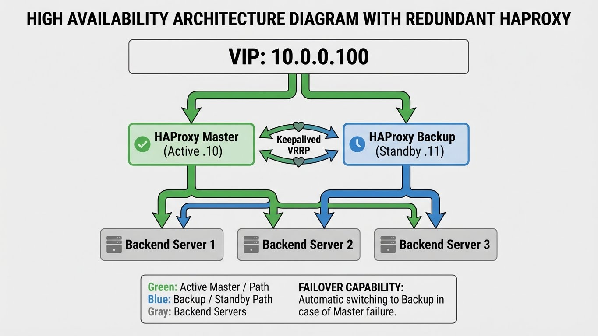

Load Balancing
Concepts et implémentation du load balancing : HAProxy, Nginx, et architectures haute disponibilité.
Concepts Fondamentaux

LOAD BALANCING - VUE D'ENSEMBLE
══════════════════════════════════════════════════════════
┌─────────────┐
│ Clients │
└──────┬──────┘
│
┌───────────▼───────────┐
│ Load Balancer │
│ (VIP: 10.0.0.100) │
└───────────┬───────────┘
│
┌────────────────────┼────────────────────┐
│ │ │
▼ ▼ ▼
┌─────────────┐ ┌─────────────┐ ┌─────────────┐
│ Backend 1 │ │ Backend 2 │ │ Backend 3 │
│ 10.0.0.11 │ │ 10.0.0.12 │ │ 10.0.0.13 │
└─────────────┘ └─────────────┘ └─────────────┘
Objectifs:
• Distribution de charge entre serveurs
• Haute disponibilité (failover automatique)
• Scalabilité horizontale
• Maintenance sans interruption
Couches OSI
LOAD BALANCING PAR COUCHE
══════════════════════════════════════════════════════════
Layer 4 (Transport - TCP/UDP):
• Décision basée sur IP:port
• Très performant (peu d'overhead)
• Pas d'inspection du contenu
• Exemples: HAProxy mode tcp, LVS, F5
Layer 7 (Application - HTTP):
• Décision basée sur le contenu (URL, headers, cookies)
• Fonctionnalités avancées (routing, rewriting)
• Plus de latence (parsing HTTP)
• Exemples: HAProxy mode http, Nginx, Traefik, Envoy
Choix:
L4 → Performance pure, protocoles non-HTTP
L7 → Flexibilité, routing intelligent, TLS termination
Algorithmes de Distribution
ALGORITHMES DE LOAD BALANCING
══════════════════════════════════════════════════════════
Round Robin:
• Chaque serveur à tour de rôle
• Simple, équitable si serveurs identiques
• Ne tient pas compte de la charge
Weighted Round Robin:
• Round robin avec poids par serveur
• Serveur puissant = poids élevé = plus de requêtes
Least Connections:
• Envoie vers le serveur avec le moins de connexions actives
• Bon pour requêtes de durée variable
Weighted Least Connections:
• Least connections avec poids
• Combine capacité et charge actuelle
IP Hash:
• Hash de l'IP client → même serveur
• Sticky sessions sans cookies
• Problème si NAT (tous les clients même IP)
URI Hash:
• Hash de l'URI → même serveur
• Bon pour cache (même ressource = même serveur)
Least Response Time:
• Vers le serveur le plus rapide
• Nécessite des health checks actifs
Random:
• Distribution aléatoire
• Simple, pas de state à maintenir
HAProxy
Installation
# Debian/Ubuntu
apt install haproxy
# RHEL/CentOS
dnf install haproxy
# Version récente (PPA)
add-apt-repository ppa:vbernat/haproxy-2.8
apt update && apt install haproxy
# Vérifier
haproxy -v
Configuration de Base
# /etc/haproxy/haproxy.cfg
global
log /dev/log local0
log /dev/log local1 notice
chroot /var/lib/haproxy
stats socket /run/haproxy/admin.sock mode 660 level admin
stats timeout 30s
user haproxy
group haproxy
daemon
# Optimisations
maxconn 50000
tune.ssl.default-dh-param 2048
defaults
log global
mode http
option httplog
option dontlognull
option redispatch
option http-server-close
timeout connect 5s
timeout client 30s
timeout server 30s
retries 3
# Compression
compression algo gzip
compression type text/html text/plain application/json
# Stats page
listen stats
bind *:8404
stats enable
stats uri /stats
stats refresh 10s
stats auth admin:password
# Frontend HTTP
frontend http_front
bind *:80
default_backend http_back
# Backend
backend http_back
balance roundrobin
option httpchk GET /health
http-check expect status 200
server web1 10.0.0.11:80 check
server web2 10.0.0.12:80 check
server web3 10.0.0.13:80 check backup
HTTPS et TLS Termination
frontend https_front
bind *:443 ssl crt /etc/haproxy/certs/wildcard.pem alpn h2,http/1.1
bind *:80
# Redirect HTTP to HTTPS
http-request redirect scheme https unless { ssl_fc }
# HSTS
http-response set-header Strict-Transport-Security "max-age=31536000; includeSubDomains"
# Routing basé sur le Host
acl host_api hdr(host) -i api.example.com
acl host_web hdr(host) -i www.example.com
use_backend api_back if host_api
use_backend web_back if host_web
default_backend web_back
backend api_back
balance leastconn
option httpchk GET /health
# Headers
http-request set-header X-Forwarded-Proto https
http-request set-header X-Real-IP %[src]
server api1 10.0.0.21:8080 check
server api2 10.0.0.22:8080 check
backend web_back
balance roundrobin
option httpchk GET /
# Sticky sessions (cookie)
cookie SERVERID insert indirect nocache
server web1 10.0.0.11:80 check cookie s1
server web2 10.0.0.12:80 check cookie s2
Layer 4 (TCP)
# Mode TCP pour base de données, autres protocoles
frontend mysql_front
bind *:3306
mode tcp
option tcplog
default_backend mysql_back
backend mysql_back
mode tcp
balance leastconn
option mysql-check user haproxy
server mysql1 10.0.0.31:3306 check
server mysql2 10.0.0.32:3306 check backup
Health Checks Avancés
backend api_back
# HTTP health check
option httpchk
http-check connect
http-check send meth GET uri /health ver HTTP/1.1 hdr Host api.example.com
http-check expect status 200
# Paramètres de check
server api1 10.0.0.21:8080 check inter 3s fall 3 rise 2
# TCP health check
backend redis_back
mode tcp
option tcp-check
tcp-check connect
tcp-check send PING\r\n
tcp-check expect string +PONG
server redis1 10.0.0.41:6379 check
ACLs et Routing
frontend http_front
bind *:80
# ACLs
acl is_api path_beg /api
acl is_static path_end .css .js .png .jpg .gif
acl is_websocket hdr(Upgrade) -i websocket
acl is_post method POST
acl from_internal src 10.0.0.0/8 192.168.0.0/16
acl is_blocked_ua hdr_sub(User-Agent) -i bot crawler
# Rate limiting
stick-table type ip size 100k expire 30s store http_req_rate(10s)
http-request track-sc0 src
http-request deny deny_status 429 if { sc_http_req_rate(0) gt 100 }
# Routing
use_backend static_back if is_static
use_backend api_back if is_api
use_backend ws_back if is_websocket
http-request deny if is_blocked_ua
default_backend web_back
Nginx (Load Balancer)
Configuration de Base
# /etc/nginx/nginx.conf
upstream backend {
# Algorithme (round-robin par défaut)
# least_conn;
# ip_hash;
# hash $request_uri consistent;
server 10.0.0.11:80 weight=3;
server 10.0.0.12:80 weight=2;
server 10.0.0.13:80 backup;
# Keepalive connections
keepalive 32;
}
server {
listen 80;
server_name example.com;
location / {
proxy_pass http://backend;
proxy_http_version 1.1;
proxy_set_header Host $host;
proxy_set_header X-Real-IP $remote_addr;
proxy_set_header X-Forwarded-For $proxy_add_x_forwarded_for;
proxy_set_header X-Forwarded-Proto $scheme;
proxy_set_header Connection "";
# Timeouts
proxy_connect_timeout 5s;
proxy_send_timeout 60s;
proxy_read_timeout 60s;
# Buffers
proxy_buffering on;
proxy_buffer_size 4k;
proxy_buffers 8 4k;
}
# Health check endpoint
location /nginx_status {
stub_status on;
allow 127.0.0.1;
deny all;
}
}
HTTPS et HTTP/2
upstream backend {
server 10.0.0.11:80;
server 10.0.0.12:80;
}
server {
listen 80;
server_name example.com;
return 301 https://$server_name$request_uri;
}
server {
listen 443 ssl http2;
server_name example.com;
ssl_certificate /etc/nginx/ssl/fullchain.pem;
ssl_certificate_key /etc/nginx/ssl/privkey.pem;
ssl_protocols TLSv1.2 TLSv1.3;
ssl_ciphers ECDHE-ECDSA-AES128-GCM-SHA256:ECDHE-RSA-AES128-GCM-SHA256;
ssl_prefer_server_ciphers off;
ssl_session_cache shared:SSL:10m;
ssl_session_timeout 1d;
# HSTS
add_header Strict-Transport-Security "max-age=31536000; includeSubDomains" always;
location / {
proxy_pass http://backend;
proxy_set_header Host $host;
proxy_set_header X-Real-IP $remote_addr;
proxy_set_header X-Forwarded-Proto https;
}
}
Routing Avancé
upstream api {
server 10.0.0.21:8080;
server 10.0.0.22:8080;
}
upstream web {
server 10.0.0.11:80;
server 10.0.0.12:80;
}
upstream static {
server 10.0.0.51:80;
}
server {
listen 80;
# Static files
location ~* \.(css|js|png|jpg|gif|ico|woff2)$ {
proxy_pass http://static;
proxy_cache static_cache;
proxy_cache_valid 200 1d;
add_header X-Cache-Status $upstream_cache_status;
}
# API
location /api/ {
proxy_pass http://api/;
proxy_http_version 1.1;
proxy_set_header Connection "";
}
# WebSocket
location /ws {
proxy_pass http://api;
proxy_http_version 1.1;
proxy_set_header Upgrade $http_upgrade;
proxy_set_header Connection "upgrade";
proxy_read_timeout 86400;
}
# Default
location / {
proxy_pass http://web;
}
}
Health Checks (Nginx Plus ou module tiers)
# Nginx Plus ou avec module nginx_upstream_check
upstream backend {
server 10.0.0.11:80;
server 10.0.0.12:80;
# Nginx Plus
# health_check interval=5s fails=3 passes=2;
# Passive health check (open source)
# max_fails et fail_timeout
server 10.0.0.11:80 max_fails=3 fail_timeout=30s;
}
Traefik
Configuration Docker
# docker-compose.yml
version: "3.8"
services:
traefik:
image: traefik:v2.10
command:
- "--api.dashboard=true"
- "--providers.docker=true"
- "--providers.docker.exposedbydefault=false"
- "--entrypoints.web.address=:80"
- "--entrypoints.websecure.address=:443"
- "--certificatesresolvers.letsencrypt.acme.httpchallenge=true"
- "--certificatesresolvers.letsencrypt.acme.httpchallenge.entrypoint=web"
- "--certificatesresolvers.letsencrypt.acme.email=admin@example.com"
- "--certificatesresolvers.letsencrypt.acme.storage=/letsencrypt/acme.json"
ports:
- "80:80"
- "443:443"
volumes:
- /var/run/docker.sock:/var/run/docker.sock:ro
- ./letsencrypt:/letsencrypt
labels:
- "traefik.enable=true"
- "traefik.http.routers.dashboard.rule=Host(`traefik.example.com`)"
- "traefik.http.routers.dashboard.service=api@internal"
- "traefik.http.routers.dashboard.middlewares=auth"
- "traefik.http.middlewares.auth.basicauth.users=admin:$$apr1$$..."
webapp:
image: nginx
labels:
- "traefik.enable=true"
- "traefik.http.routers.webapp.rule=Host(`www.example.com`)"
- "traefik.http.routers.webapp.entrypoints=websecure"
- "traefik.http.routers.webapp.tls.certresolver=letsencrypt"
- "traefik.http.services.webapp.loadbalancer.server.port=80"
deploy:
replicas: 3
Configuration Kubernetes
# IngressRoute Traefik
apiVersion: traefik.containo.us/v1alpha1
kind: IngressRoute
metadata:
name: webapp
spec:
entryPoints:
- websecure
routes:
- match: Host(`www.example.com`)
kind: Rule
services:
- name: webapp
port: 80
middlewares:
- name: rate-limit
tls:
certResolver: letsencrypt
---
apiVersion: traefik.containo.us/v1alpha1
kind: Middleware
metadata:
name: rate-limit
spec:
rateLimit:
average: 100
burst: 50
Haute Disponibilité
HAProxy + Keepalived

ARCHITECTURE HA
══════════════════════════════════════════════════════════
VIP: 10.0.0.100
│
┌───────────────┴───────────────┐
│ │
┌────▼────┐ ┌────▼────┐
│ HAProxy │◄──── Keepalived ───│ HAProxy │
│ Master │ (VRRP) │ Backup │
│ .10 │ │ .11 │
└────┬────┘ └────┬────┘
│ │
└───────────────┬───────────────┘
│
┌───────────────┼───────────────┐
▼ ▼ ▼
┌─────────┐ ┌─────────┐ ┌─────────┐
│Backend 1│ │Backend 2│ │Backend 3│
└─────────┘ └─────────┘ └─────────┘
# /etc/keepalived/keepalived.conf (Master)
vrrp_script check_haproxy {
script "/usr/bin/killall -0 haproxy"
interval 2
weight 2
}
vrrp_instance VI_1 {
state MASTER
interface eth0
virtual_router_id 51
priority 101
advert_int 1
authentication {
auth_type PASS
auth_pass secretpass
}
virtual_ipaddress {
10.0.0.100/24
}
track_script {
check_haproxy
}
}
# /etc/keepalived/keepalived.conf (Backup)
vrrp_instance VI_1 {
state BACKUP
interface eth0
virtual_router_id 51
priority 100
# ... reste identique
}
Synchronisation de Configuration
# Script de sync HAProxy config
#!/bin/bash
PEERS="haproxy-02 haproxy-03"
rsync -avz /etc/haproxy/haproxy.cfg /tmp/haproxy.cfg.new
haproxy -c -f /tmp/haproxy.cfg.new
if [ $? -eq 0 ]; then
for peer in $PEERS; do
rsync -avz /etc/haproxy/haproxy.cfg $peer:/etc/haproxy/
ssh $peer "systemctl reload haproxy"
done
systemctl reload haproxy
fi
Monitoring
Métriques HAProxy
# Stats socket
echo "show stat" | socat stdio /run/haproxy/admin.sock
# Prometheus exporter
# haproxy_exporter --haproxy.scrape-uri="http://localhost:8404/stats;csv"
# Métriques importantes:
# - haproxy_frontend_current_sessions
# - haproxy_backend_current_queue
# - haproxy_server_response_time_average_seconds
# - haproxy_server_http_responses_total{code="5xx"}
Métriques Nginx
# Module stub_status
location /nginx_status {
stub_status;
allow 127.0.0.1;
deny all;
}
# Prometheus: nginx-prometheus-exporter
# Métriques:
# - nginx_http_requests_total
# - nginx_connections_active
# - nginx_connections_accepted
Bonnes Pratiques
Checklist Load Balancing:
Architecture:
- [ ] LB en haute disponibilité (2 minimum)
- [ ] Health checks actifs
- [ ] Graceful degradation (serveurs backup)
- [ ] Session persistence si nécessaire
Performance:
- [ ] Keep-alive connections vers backends
- [ ] Connection pooling
- [ ] Timeouts appropriés
- [ ] Compression activée
Sécurité:
- [ ] TLS termination au LB
- [ ] Headers de sécurité (HSTS, X-Frame-Options)
- [ ] Rate limiting
- [ ] Filtrage d'IP si nécessaire
Monitoring:
- [ ] Métriques exposées (Prometheus)
- [ ] Alertes sur backends down
- [ ] Logs des requêtes
- [ ] Dashboard de visualisation
Voir aussi :
- Modern Networking - Réseau moderne
- Kubernetes Networking - Ingress et Services
- Docker Advanced - Networking Docker